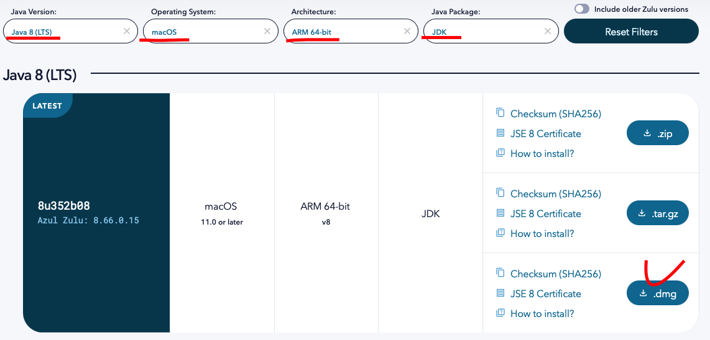
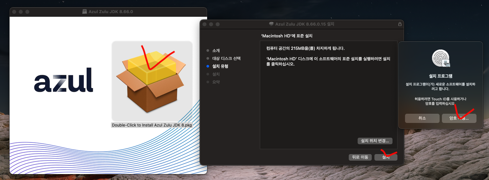
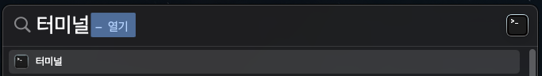
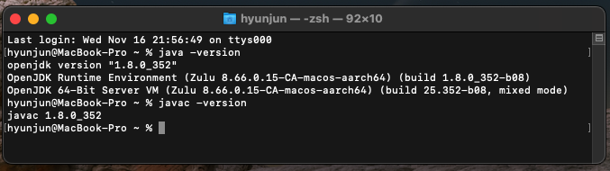
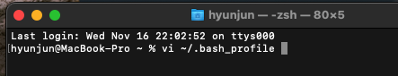
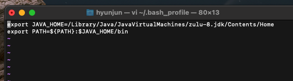
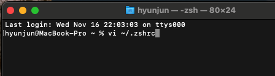
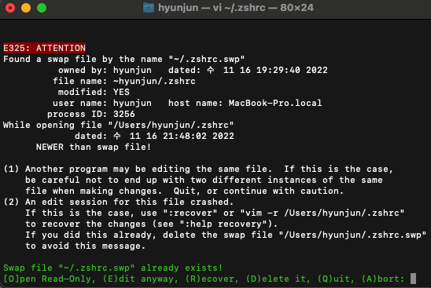
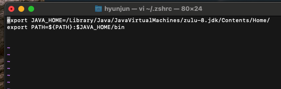
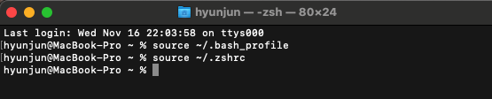

맥북 M1 JDK 1.8 (Java 8) 설치하는 법
개발 환경
- 2021, 맥북 프로 M1 Pro 14인치 모델
- Ventura 13.1 베타(22C5050e) 버전
- 2021, 맥북 프로 M1 Pro 14인치 모델
- Ventura 13.1 베타(22C5050e) 버전
라이선스 비용 및 안정성 등 여러 가지 이유로 현업에서는 1.8 버전을 많이 사용합니다.
Oracle JDK의 경우 M1, ARM 방식의 JDK 8버전은 지원하지 않으므로..
Open JDK인 Azul Zulu를 받아야 한다.

다운로드 된 설치 파일 클릭 후 설치 진행.

터미널에 들어가 줍니다. ( Command + Space Bar -> 터미널 검색 )

java -version, javac -version 명령어로 잘 설치되었는지 확인!

JDK가 설치된 폴더를 확인해 줍니다.
MacBook-Pro ~ % /usr/libexec/java_home -V
Matching Java Virtual Machines (1):
1.8.0_352 (arm64) "Azul Systems, Inc." - "Zulu 8.66.0.15" /Library/Java/JavaVirtualMachines/zulu-8.jdk/Contents/Home
vi 에디터로 해당 파일을 열어 줍니다.
vi ~/.bash_profile

에디터 실행 시 처음엔 아무것도 안 써져 있을 거예요.
키보드 i를 눌러 Insert(입력) 모드로 들어가줍니다.
맨 처음에 확인했던 주소와 같이 작성한 뒤,
esc를 눌러 입력 모드를 종료하고.
그 후 키보드 :wq를 입력하여 저장 및 종료합니다.

export JAVA_HOME=/Library/Java/JavaVirtualMachines/zulu-8.jdk/Contents/Home
export PATH=${PATH}:$JAVA_HOME/bin
마찬가지로 아래 파일도 수정해 줍니다.
vi ~/.zshrc

아래와 같이 나올 경우 E를 눌러 진입합니다.

마찬가지로 아래처럼 작성해 주세요.
export JAVA_HOME=/Library/Java/JavaVirtualMachines/zulu-8.jdk/Contents/Home/
export PATH=${PATH}:$JAVA_HOME/bin

수정한 환경 변수 들을 적용시켜줍니다.
source ~/.bash_profile
source ~/.zshrc

JDK 1.8 ( ARM )과 이클립스 최신 버전과 같이 쓰실 분은 아래 링크 글 참조하세요.